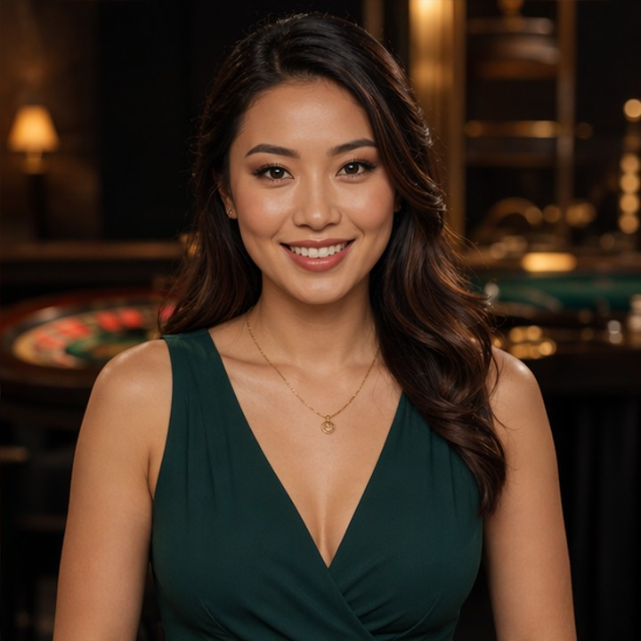

Lobby → Game → Table → Seat
The session is the relationship.
Discover the person. Follow the relationship. Enter the licensed game. Return for the person.
LC makes dealers and hosts discoverable as creators, connects that discovery to licensed play, and gives the relationship a reason to continue after the table.
Blackjack · Evening session
The session is the relationship.
The person becomes the reason to come back.
LC gives the dealer a persistent identity: profile, content, schedule, live presence and a relationship the player can follow.
Blackjack · Creator profile

Baccarat · Schedule
Live host · Content
Table host · Following
Find the person, not only the game.
Keep the relationship visible.
Know when the creator is active.
Handoff into licensed play.
Come back for the person.
A player can discover Sofia, follow her, see when she is live and continue into the licensed partner environment.
Blackjack · Creator
FollowPlayer receives a reason to return.
Continue in the licensed operator environment.
Creator relationship remains visible after play.
Use creator-led discovery as another entry point and follow/live signals as a measurable reason to return.
Give existing tables, formats and launches a persistent human discovery surface without rebuilding the regulated game stack.
Build discoverability, schedule visibility and audience continuity, subject to partner, employment and market rules.
Providers build the content. Streaming builds audience moments. LC keeps the dealer identity discoverable before and after licensed play.
Games, studios, promotions and localisation.
Shared viewing and social gaming moments.
Dealer identity → discovery → follow → live → licensed play → return.
Creator-originated visit.
Licensed partner journey.
Relationship survives the session.
Later attributable visit.
If LC can show useful handoffs, repeat visits, creator-originated return journeys or campaign response under an agreed attribution model, the partner has evidence for a commercial discussion. If not, LC should not claim that value.
The first goal is not a full rollout. It is a bounded validation with one operator, selected creators and agreed attribution.
Agree creator cohort, operator destination and attribution events.
Observe discovery, handoff, follow/live response and return journeys.
Discuss service, campaign or performance economics only after evidence exists.
A social discovery & return layer for Live Casino.